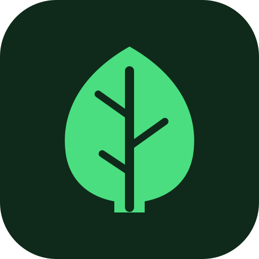

Leaf & GillWhat is that plant?
Snap a leaf, tree or mushroom. It's identified on your phone, offline, then back in your pocket.

Leaf & GillSnap a leaf, tree or mushroom. It's identified on your phone, offline, then back in your pocket.